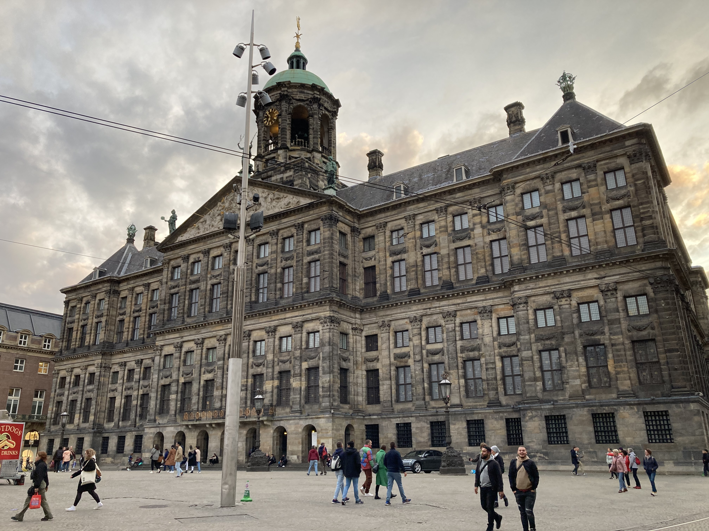

【2022荷蘭三日遊】荷蘭北爛事與阿姆斯特丹景點美食推薦
家，是委屈的時候特別想回去的地方，
去了荷蘭一趟，有夠委屈，只想趕快回柏林。
我待的時間不長，但目前可知，
荷蘭就是一個，
風景和城市很美，人很北七，食物勉強可以的地方。
◊ 荷蘭的北爛事
1. 人行道窄、腳踏車惡霸多
行人道窄就算了，路旁還會停一堆腳踏車，
有天早上走在人行道上，因為路邊有工人爬3-4米高的梯子，
我繞到機車道上走了不到三公尺，
後方一個長鬍子的白人男生，騎車未減速從我旁邊通過，
用訓斥狗的口吻，對我叫囂一堆聽不懂的荷蘭文，
最後還「叱叱」兩聲，口水音超重超噁心。
我氣不過對著他大叫「你沒看到路旁有梯子嗎？有什麼毛病！」
聲音大到他有回頭看一下，可能很震驚一個
黃種小矮人可以發出一個街口遠的聲音吧。
回到柏林，一出地鐵剛好遇到腳踏車也從我後方通過，
對方非常禮讓還說sorry，真天壤之別。
2. 遇到不友善的當地人比例更高
問地鐵服務台人員問題，對方一副你是智障嗎愛理不理的表情，
另外買個早餐也要看人臉色。
去一家網美咖啡廳，店內沒有寫不能拍攝，
我做霸台，網內拍，
大概錄了兩段10秒左右的影片，
後來發現男店員用奇怪的表情看我，
我問他怎麼了，他讓我不要攝影，
我：「店裡有禁止攝影嗎？」
他：「沒有，但我不想被拍」
我：「我沒有照到你」（他根本不在我相機對的方向）
他：「我不想我同事被拍」
說真的，他跟發條橘子的男主角感覺有87趴像，
到底自我感覺多好，不是覺得自己被錄，就是覺得自己是英雄。
重點是泡出來的咖啡也超難喝，
洗咖啡機的水加洗牛奶杯的水的感覺，
而且我們坐吧台，剛好是他的工作桌，
他敲杯子都敲超大力，不知道是故意還是怎樣，
但另一個老一點的男店員做咖啡並沒有敲那麼大聲。
另外，員工拿整箱洗好的碗來的時候，
也直接放在桌上，佔掉我們可使用桌子的1/3。
接著我去上廁所，店內廁所只有兩間又不是我的問題，
我確實是用了比較久一點，
外面的人先是直接轉動門把，我回敲了，
大概過了幾分鐘，
我的門又直接被拉扯跟轉動門把，還問說「裡面真的有人嗎」，
聽起來很像是有人去找員工來試門。
以上累積，我真的太不爽了，
直接去找一個看起來資深的員工客速，
好在那個員工EQ很好，
她跟我說他們員工不會敲廁所門（後來她真的有去問其他員工），
也表示可以免單我的咖啡。
我真的很感謝她的專業回應，不然我大概一整個行程都會超不高興。
（對的，很不幸地這是發生在第一天）
3. 交通搞笑
搭個輕軌，路上忽然停駛，
後來先是讓我們下車，又不讓我們下車，
最後輕軌倒退開了一個路口才讓我們下車。
輕軌除了司機外，還有一個櫃檯在中間，負責驗票跟賣票，
手機app可以買票，驗票機也有 QR Code 刷卡區，
但據工作人員所說，他們系統還沒啟動，笑死。
最後一天下午五點回柏林的火車，
開車前20分鐘，說火車取消。
雖然荷鐵說是德鐵問題，
總之我多花了30磅住宿，
隔天一早6點櫃檯一開去補位，
7:10跳上車，歸心似箭。
◊ 阿姆斯特丹
#阿姆斯特丹王宮
這個皇宮最特別的地方是，和別的王宮歷史反向進行，
先是國家會議廳，後來拿破崙指派親戚成為荷蘭國王時，才指定為皇宮。

代表荷蘭的女神俯視下方三個圓圖，東西半邊地球，以及天文圖。
雕像強調荷蘭的精神「貿易與和平」，唯有兩者可以帶來繁榮，
沒想到劫掠各國的殖民主，會這樣強調自己的核心精神。
館內的雕像與畫作都非常精緻，可以跟隨導覽機一一欣賞，
以下列出我的三大看點。
#看點速報 1 - 地圖與台灣
大廳地板的世界地圖反映大航海時代的地理知識，
因為荷蘭曾經統治台灣，
可以清楚看到台灣西邊的樣子，甚至把台灣畫的比現在大。
另外像澳洲和北美西北部，因為沒探索很仔細，所以畫得比較失真。


#看點速報 2 - 畫作與導覽器動畫
導覽器用動畫的方式呈現畫作重點，
例如天使降臨，就有天使從上方滑入畫作，
是我和朋友公認做得最好的解說動畫，
不但音樂和旁白聲音好聽，
畫作動畫也十分流暢引人入勝。


#看點速報3 - 接收智慧之廳
這是我自己特別喜歡的廳，除了強調智慧，傾聽他人的建議也很重要。
前方壁畫則是所羅門王祈求上天賜予他領導眾人的智慧。
上方壁畫像是跟來人互動，天使將降落賜予你智慧，


#紅燈區真人Show
有做愛的橋段是真的插進去，讓人對荷蘭的性產業大開眼界，
拜託不要錯過！
裡面很乾淨，不用擔心，也有情侶一起進去，


我跟朋友放棄的米其林餐廳（因為預算有限），
一場秀總共有7個小單元，有些單元會找觀眾互動，
買票坐進去之後就自己看，看到重複的就可以自行出來了。
建議早點去(一開門就去）不用排隊，位子也比較多可以選
雙人做愛的部分，可惜沒有男男跟女女，
因為每次輪替都是同一組人上場，
也就是他們一個晚上，都要上台做同套路很多次，
表情是沒有很快樂投入，反而像在工作
（不過人家真的是在工作…）
但整體來說，非常值得，畢竟其他地方看不到。